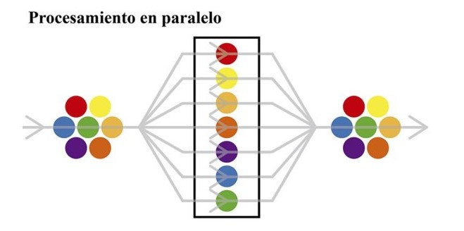
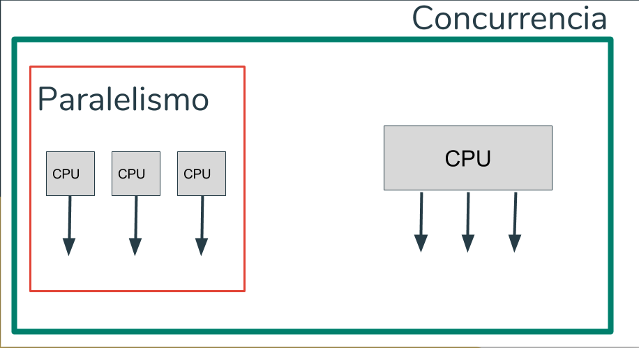
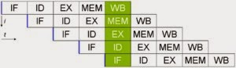
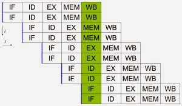
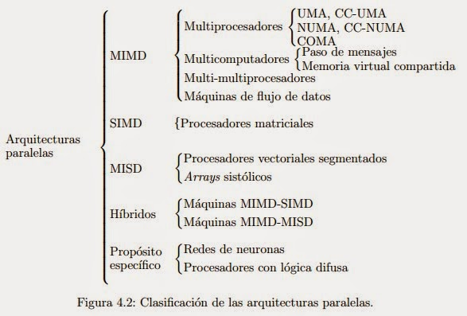
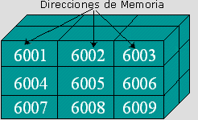
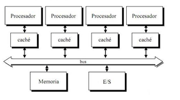
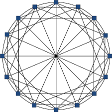
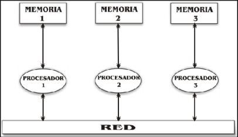

La computación paralela es una forma de cómputo en la que muchas instrucciones se ejecutan
simultáneamente
operando sobre el principio de que problemas grandes, a menudo se pueden
dividir en unos más pequeños, que luego son resueltos simultáneamente (en paralelo). Hay varias
formas diferentes de computación paralela: paralelismo a nivel de bit, paralelismo a nivel de
instrucción, paralelismo de datos y paralelismo de tareas.
Las computadoras paralelas pueden clasificarse según el nivel de paralelismo que admite
su hardware: equipos con procesadores multinúcleo y multi-procesador que tienen múltiples
elementos de procesamiento dentro de una sola máquina y los clústeres, MPPS y grids que utilizan
varios equipos para trabajar en la misma tarea. Muchas veces, para acelerar la tareas específicas,
se utilizan arquitecturas especializadas de computación en paralelo junto a procesadores
tradicionales

Paralelismo a nivel de bit:
Desde el advenimiento de la integración a gran escala (VLSI) como tecnología de fabricación de chips de
computadora en la década de 1970 hasta alrededor de 1986, la aceleración en la arquitectura de computadores
se lograba en gran medida duplicando el tamaño de la palabra en la computadora, la cantidad de información
que el procesador puede manejar por ciclo.
El aumento del tamaño de la palabra reduce el número de instrucciones que el procesador debe ejecutar para
realizar una operación en variables cuyos tamaños son mayores que la longitud de la palabra. Por ejemplo,
cuando un procesador de 8 bits debe sumar dos enteros de 16 bits, el procesador primero debe adicionar los 8
bits de orden inferior de cada número entero con la instrucción de adición, a continuación, añadir los 8
bits de orden superior utilizando la instrucción de adición con acarreo que tiene en cuenta el bit de
acarreo de la adición de orden inferior, en este caso un procesador de 8 bits requiere dos instrucciones
para completar una sola operación, en donde un procesador de 16 bits necesita una sola instrucción para
poder completarla.
Paralelismo a nivel de instrucción:
Un programa de ordenador es, en esencia, una secuencia de instrucciones ejecutadas por un procesador. Estas
instrucciones pueden reordenarse y combinarse en grupos que luego son ejecutadas en paralelo sin cambiar el
resultado del programa. Esto se conoce como paralelismo a nivel de instrucción. Los avances en el
paralelismo a nivel de instrucción dominaron la arquitectura de computadores desde mediados de 1980 hasta
mediados de la década de 1990.

Paralelismo de datos: El paralelismo de datos es el paralelismo inherente en programas con ciclos, que se centra en la distribución de los datos entre los diferentes nodos computacionales que deben tratarse en paralelo. La paralelización de ciclos conduce a menudo a secuencias similares de operaciones —no necesariamente idénticas— o funciones que se realizan en los elementos de una gran estructura de datos. Muchas de las aplicaciones científicas y de ingeniería muestran paralelismo de datos.

La clasificación de Flynn ha demostrado funcionar bastante bien para la tipificación de sistemas, y se ha venido usando desde décadas por la mayoría de los arquitectos de computadores. Sin embargo, los avances en tecnología y diferentes topologías, han llevado a sistemas que no son tan fáciles de clasificar dentro de los 4 tipos de Flynn. Por ejemplo, los procesadores vectoriales no encajan adecuadamente en esta clasificación, ni tampoco las arquitecturas hibridas. Para solucionar esto se han propuesto otras clasificaciones, donde los tipos SIMD y MIMD de Flynn se suelen conservar, pero que sin duda no han tenido el éxito de la de Flynn.

A diferencia de los sistemas combinacionales, en los sistemas secuenciales, los
valores de las salidas, en un momento dado, no dependen exclusivamente de los
valores de las entradas en dicho momento, sino también de los valores anteriores.
El sistema secuencial más simple es el biestable.
La mayoría de los sistemas secuenciales están gobernados por señales de reloj. A
éstos se los denomina "síncronos" o "sincrónicos", a diferencia de los "asíncronos"
o "asincrónicos" que son aquellos que no son controlados por señales de reloj.
A continuación se indican los principales sistemas secuenciales que pueden
encontrarse en forma de circuito integrado o como estructuras en sistemas
programados:
* Contador
* Registros
La memoria de acceso secuencial son memorias en la cuales para acceder a un registro en particular se tienen
que leer registro por registro desde el inicio hasta alcanzar el registro particular que contiene el dato
que se requiere. Estas memorias se clasifican en:
Registros de desplazamiento
Dispositivos por acoplamiento por carga
Memorias de burbuja
Organización lógica
Los programas a menudo están organizados en módulos, algunos de los cuales
pueden ser compartidos por diferentes programas, algunos son de sólo-lectura y
otros contienen datos que se pueden modificar. La gestión de memoria es
responsable de manejar esta organización lógica, que se contrapone al espacio de
direcciones físicas lineales. Una forma de lograrlo es mediante la segmentación de
memoria.
Organización física
La memoria suele dividirse en un almacenamiento primario de alta velocidad y uno
secundario de menor velocidad. La gestión de memoria del sistema operativo se
ocupa de trasladar la información entre estos dos niveles de memoria.

Cada procesador posee su propia unidad de control ejecuta su propio código
sobre sus propios datos, puede ejecutar cualquier aplicación (no solo programas
vectoriales).
Memoria Compartida Centralizada:
La memoria compartida por todos los procesadores y accesible desde cualquiera.
Descompuesta en varios módulos para permitir el acceso concurrente de varios
procesadores.
Cada procesador debe tener un espacio de direccionamiento suficientemente
amplio como para poder direccionarla completamente.
Multiprocesador con un sistema de memoria compartida en el cual el tiempo de
acceso varía dependiendo de la ubicación de la palabra de memoria.
La memoria compartida se distribuye físicamente por todos los procesadores
(memorias locales). El conjunto de memorias locales forma el espacio de
direccionamiento global accesible por todos los procesadores. En los
multiprocesadores cada procesador suele tener asociada una cache local y ello
introduce el problema de la coherencia en chache: cualquier modificación local de
una determinada posición de la memoria compartida se realizara primeramente
sobre una chache local y ello puede dar lugar a una visión global incoherente de la
memoria.los elementos que integran un multiprocesador puede estar conectados
entre sí a través de una estructura Jerárquica de buses.
Los buses digitales son los sistemas de
interconexión
fundamentales adoptados en sistemas comerciales desde estaciones de trabajo a
minicomputadores, mainframes y multiprocesadores.

Características:
Antes de definir las características de las redes de interconexión diremos que se
llama nodo a cualquiera de los dispositivos que se quiera conectar a la red, tales
como elementos de proceso, módulos de memoria, procesadores de
entrada/salida, etc.
o Grado de los nodos
o Diámetro de una red
o Ancho de bisección
o Latencia de una red
o Productividad
o Escalabilidad
o Simetría
o Conectividad
Clasificación de Redes de interconexión:
El criterio más importante para la clasificación de las redes de interconexión se
basa en la rigidez de los enlaces entre los nodos: a este respecto a las redes
pueden clasificarse en estáticas o dinámicas. Una red estática se caracteriza
porque su topología queda establecida de forma definitiva y estable cuando se
instala un sistema; su única posibilidad de modificación es crecer. Por el contrario,
una red dinámica puede variar de topología bien durante el curso de la ejecución o
de los procesos o bien entre la ejecución de los mismos.
Por otra parte, las redes pueden ser jerárquicas o no, los son si están formadas
por una serie de niveles, con diferente número de nodos, dentro de cada uno de
los cuales existe simetría. La mayoría de las redes jerárquicas suelen ser
estáticas, sin embargo, hay algún tipo de topología dinámica que también puede
serlo.
Redes de interconexión dinámicas
Las redes de interconexión dinámicas son convenientes en los casos en que se
desee una red de propósito general ya que son fácilmente reconfigurables.
También por eso, este tipo de Redes facilitan mucho la escalabilidad. En general,
las redes dinámicas necesitan de elementos de conexión específicos como
pueden ser árbitros de bus, conmutadores, etc. Las principales topologías de
redes dinámicas son las siguientes:
o Buses
o Redes de líneas cruzadas o matriz de conmutación (crossbar)
o Redes multietapa o MIN (Multistage Interconnection Network)
o Redes Omega
o Redes de línea base
o Redes Mariposa
o Redes Delta
o Redes de Closs
o Redes de Benes

Los sistemas de memoria distribuida o multicomputadores pueden ser de dos tipos básicos. El primer de ellos
consta de un único computador con múltiples CPUs comunicadas por un bus de datos mientras que en el segundo
se utilizan múltiples computadores, cada uno con su propio procesador, enlazados por una red de
interconexión más o menos rápida.
Sobre los sistemas de multicomputadores de memoria distribuida, se simula memorias compartidas. Se usan los
mecanismos de comunicación y sincronización de sistemas multiprocesadores.

Las redes estáticas emplean enlaces directos fijos entre los nodos. Estos enlaces, una vez fabricado el
sistema son difíciles de cambiar, por lo que la escalabilidad de estas topologías es baja. Las redes
estáticas pueden utilizarse con eficiencia en los sistemas en que pueden predecirse el tipo de tráfico de
comunicaciones entre sus procesadores.
o Clases de redes de interconexión:
Formación lineal: Se trata de una red unidimensional en que los nodos se conectan cada uno con el
siguiente
medianteN-1 enlaces formando una línea.
o Mallas y toros: Esta red de interconexión es muy utilizada en la práctica. Las redes en toro son
mallas en
que sus filas y columnas tienen conexiones en anillo, esto contribuye a disminuir su diámetro. Esta pequeña
modificación permite convertir a las mallas en estructuras simétricas y además reduce su diámetro a la
mitad.
Por numerosos motivos, el procesamiento distribuido se ha convertido en un área de gran importancia e
interés dentro de la Ciencia de la Computación, produciendo profundas transformaciones en las líneas de I/D.
Grandes empresas y sus implementaciones con procesamiento paralelo:
NVIDIA
PYSICS LAYER:
GPU PhysX
CPU PhysX
Graphics Layer:
GPU –DirectX Windows
INTEL
PYSICS LAYER:
No GPU PhysX
CPU Havok
Graphics Layer:
GPU –Direct X Windows
AMD
PYSICS LAYER:
No GPU PhysX
CPU Havok
Graphics Layer:
GPU –DirectX Windows